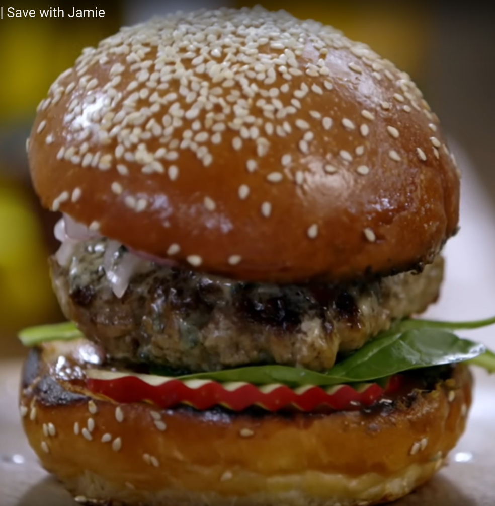

Jamie's Burger
Home

Jamie's better than takeaway burger
This is the first meal I ever made with Paul. Usually we get takeaways or mum cooks, but this time I suggested we go to Countdown and get these ingredients.
Instead of wedges we bought smiley faces, because we are two grown men. It was a blast and I think it's the start of a beautiful tradition.
Ingredients
- Buns
- Mince
- Spinach
- Apple
- Red Onion
- Salt
- Red Wine Vinegar
- Cheese
- Sauce
Instructions
- Form burger patties with the mince - season with salt and pepper.
- Cook on medium heat for 3 - 4 mins each side.
- Thinly slice half a red onion. Add to bowl with red wine vinegar and a pinch of salt.
- Flip burger to the other side. Add cheese then leave lid on top for cheese to melt.
- Slice buns in half, lightly toast them with the burger patties.
- Sauce the buns, slice the apple and place on top.
- Place the spinach, then lamb, then onion pickle.
- Sauce the top bun, then place on top and enjoy!